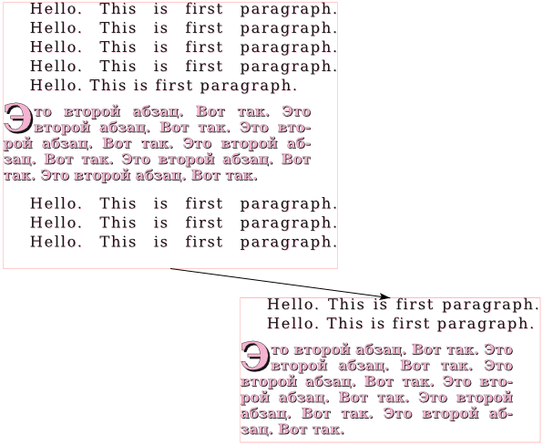
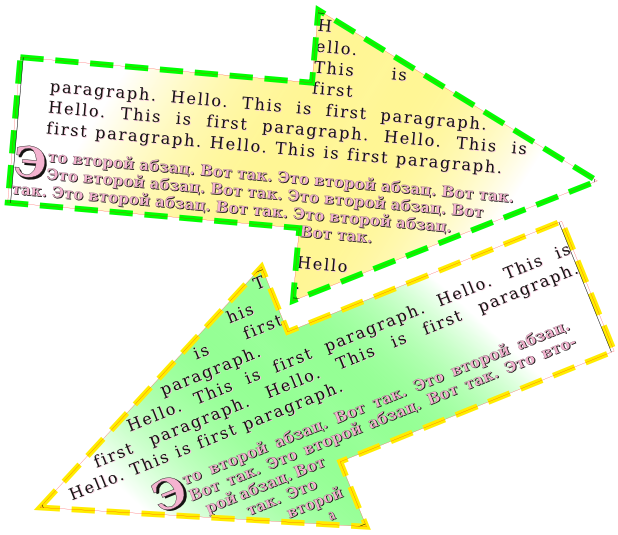
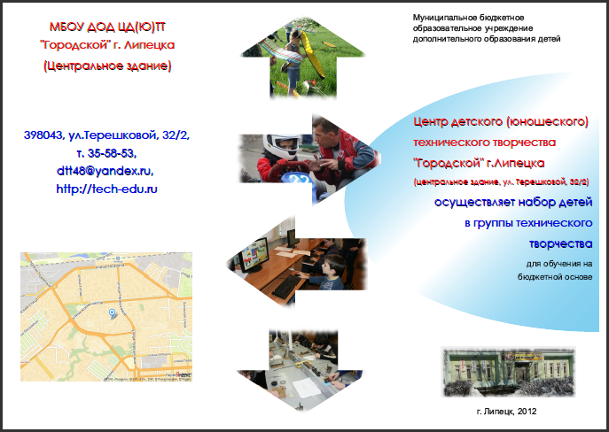
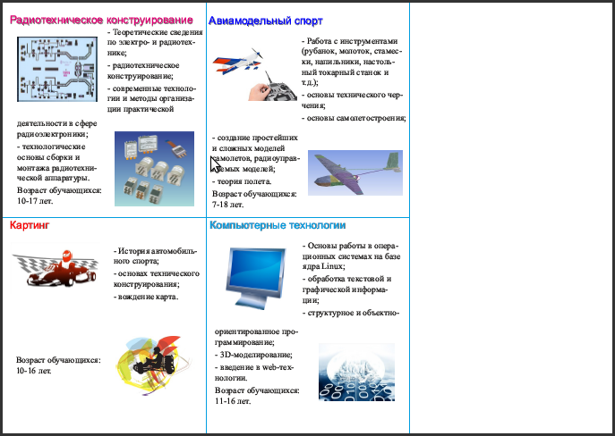
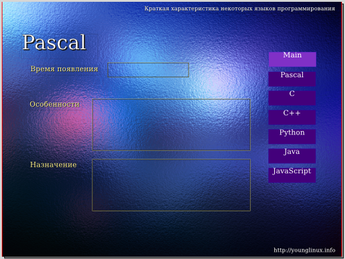
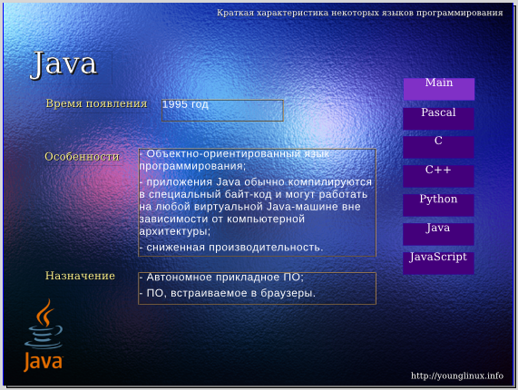

Практическое введение в Scribus
Занятие 1. Знакомство с приложением Scribus
Практическое введение в Scribus
Особенности издательских систем
Scribus — это приложение для создания документов, преимущественно предназначенных для последующей печати и состоящих в основном из обычного текста и изображений. Например, для создания документов, включающих в себя большой количество математических формул, Scribus вряд ли подойдет.
Формирование страниц, их оформление называют версткой документов, а приложения позволяющие это делать — издательскими системами. Scribus — это свободно-распространяемый аналог известных проприетарных издательских систем для визуальной верстки. В таких приложениях на сегодняшний день создаются газеты, журналы, рекламные буклеты и т.п.
Конечно, можно верстать документы в обычных текстовых процессорах (например, Writer или Word), особенно если не требуется замысловатого расположения элементов друг относительно друга. Однако программы для верстки предлагают ряд удобств и возможностей, которые позволяют создавать красивые документы быстрее, и их вид обычно получается более качественный.
Одной из особенностей Scribus является так называемый блочный способ верстки. Если в текстовом процессоре вы вставите картинку в определенное место страницы, а затем до нее начнете писать или редактировать текст, то картинка сместится и окажется совсем не там, где вам надо. В Scribus такого произойти не может, картинка останется на том месте, куда ее поместили, независимо от того, что вы будете делать с другими объектами страницы (текстом, таблицами, другими изображениями). При компоновке страниц — это большое удобство.
Кроме того, в Scribus есть другие особенности, облегчающие верстку. Также он позволяет опубликовать готовый документ в различных форматах (PDF, PNG и многие другие).
Есть еще одно отличие приложений для верстки от текстовых, которое следует всегда помнить. Обычно основная часть материала, входящая в готовящуюся публикацию, располагается в отдельных файлах: текст в форматах текстовых файлов (odt, txt и др.), картинки в форматах графических файлов. Издательская система в основном служит лишь для загрузки этих объектов, взаимного их расположения, оформления. Только небольшие части текста и декоративные элементы имеет смысл создавать непосредственно в Scribus. Можно сказать, что системы верстки являются конструкторами страниц.
Первое знакомство
При запуске программы у вас может появиться диалоговое окно с предупреждением о том, что отсутствует Ghostscript. Это программа для языка PostScript, который представляет собой язык описания страниц. Просто нажмите OK, можно обойтись без этого.
Первое, что перед вами откроется, — это диалоговое окно "Новый документ", где устанавливаются настройки страницы публикации, определяется их количество. В печати обычно используют измерение шрифта в пунктах (pt), это абсолютная величина, равная примерно 0,35 миллиметра, т.е. в одном миллиметре умещается примерно 3 пункта. Когда предполагается, что документ будет печататься на бумаге, то важно иметь дело именно с абсолютными величинами. Главное помните, пункт — это не пиксель экрана монитора.
В одном из полей укажите 3 pt вместо 40 pt, затем поменяйте единицы измерения с пунктов на миллиметры. Убедитесь, что в 3 pt чуть больше 1-го мм. Верните все как было.
Обратим внимание на существующие макеты документа. Если публикация будет состоять всего из одной страницы, то выбирать иные макеты, помимо одиночной страницы, бессмысленно. Когда вы выбираете парные страницы размером допустим A4, это значит, что каждая страница пары будет именно A4. Парность здесь используется для того, чтобы удобно было видеть, как материал будет располагаться относительно друг друга на развороте (если это журнал), также "парность" позволяет задавать разные левые и правые поля в зависимости от того левая это страница или правая. Обратите внимание как меняются названия полей при переключении макета с одиночной страницы на парные: вместо "Слева" и "Справа" появляются "Изнутри" и "Снаружи".
Выберите парные страницы, укажите количество страниц 4, задайте разную ширину полей для "Изнутри" и "Снаружи", нажмите OK. Перед вами окажется белый лист. Зажмите Ctrl и покрутите колесо мыши, чтобы уменьшить масштаб, пока не увидите четыре страницы.
Вторая и третья образуют между собой пару. Теперь представьте, что печать двухсторонняя. Первая страница будет обложкой. Вторая страница — ее внутренней стороной. А третья образует разворот со второй. Четверная страница будет напечатана на обратной стороне третьей. Об этом же "говорят" и поля.
Закройте без сохранения документ, но не Scribus. Выполните команду Файл → Новый. Выберите одиночную страницу альбомной ориентации, нажмите OK.
В Scribus есть четыре панели инструментов: "Файл", "Правка", "Инструменты" и "PDF-инструменты".

С первыми двумя должно быть более менее понятно. Панель PDF-инструментов позволяет добавлять в публикацию такие интерактивные элементы как кнопки, списки, флажки. Обычно они используется при подготовке презентаций или интерактивных страниц, которые далее будут не печататься, а распространяться в формате PDF.
Инструмент, который выбран по умолчанию — это "Выбрать объект" в виде стрелки. Он позволяет выделять объекты на холсте по одному или группой. Если требуется сбросить этот инструмент следует нажать Пробел. В этом случае появится "рука", которая позволит перемещать холст. Вообще, если вы выбрали какой-нибудь инструмент, но потом передумали им пользоваться и решили вернуться к указателю, то следует нажать клавишу C. Далее в скобках будут указываться горячие клавиши инструментов.
Следующий инструмент — это "Текстовый блок" (T).
Выберите его и растяните небольшую рамку на холсте. Кликните по ней два раза и напишите текст на русском и английском языках.
Если русский текст выглядит как пустые квадратики или вообще не набирается, значит по умолчанию используется шрифт, в котором отсутствуют русские буквы. В этом случае следует установить по умолчанию другой шрифт. Для этого выполните команду Файл → Настроить Scribus, в открывшемся окне "Параметры Scribus" слева выберите "Инструменты". В свойствах для текстового блока выберите шрифт, для которого есть как английские, так и русские буквы. Желательно выбрать что-то из популярных шрифтов таких как Arial, Times New Roman, DejaVu и т.п. Новые настройки не применяются к текущему документу. Поэтому закройте его без сохранения и создайте новый.
Оставьте текстовый блок на холсте. Все остальное по поводу текста будет рассмотрено на следующем занятии.
Изображения и рисование в Scribus
Инструмент "Блок изображения" (I) позволяет разместить на холсте блок под изображение, в который далее можно "загрузить" картинку (на самом деле она не загружается, а связывается).
Разместите на холсте блок под изображение. Кликните по нему дважды и выберите небольшое изображение.
Если потребуется поменять картинку в блоке, то уже двойной щелчок не пройдет. Сменить изображение можно через контекстное меню (пункт "Вставить изображение") или нажав Ctrl+I.
Обычно размер блока и размер связанного с ним изображения не совпадают. Здесь можно поступить двумя способами. Либо выбрать в контекстном меню "Блок до размеров изображения", и тогда блок сожмется/растянется до истинного размера картинки. Либо выбрать "Вписать изображение в блок", тогда картинка постарается занять область блока. В последнем случае одну из сторон блока скорее всего потребуется подогнать под картинку, т.к. вряд ли отношения сторон картинки и блока будут совпадать сразу. Когда картинка вписана в блок мы можем менять ее размер, изменяя размер блока (за красные метки). В Scribus для того чтобы взаимосвязанно изменять высоту и ширину любого блока необходимо удерживать Ctrl.
Если изображение слишком большое, то единственный вариант, который вам подойдет — это "Вписать изображение в блок". Однако есть один нюанс, который исчезает, если изображение будет вписано в блок. Вы не сможете перемещать картинку внутри блока, два раза кликнув по ней. А эта возможность может пригодиться для того, чтобы задавать поля — отступы от границ блока до картинки. Поэтому может быть лучше размер изображений подбирать заранее, однако это не всегда удобно.
Два раза кликните по изображению и попробуйте его перемещать внутри блока.
Сделайте так, чтобы изображение помещалось в блок. Добавьте на холст еще один блок с изображением.
Рядом с инструментом "Фигура" (S) есть треугольник. Нажав его, вы увидите коллекции различных фигур.
Разместите пару понравившихся фигур на холсте.
У инструмента "Многоугольник" также есть треугольник, открывающий доступ к свойствам этого инструмента. Здесь можно изменить настройки так, чтобы получилась достаточно замысловатая фигура:
Когда многоугольник настроен и нажата кнопка OK, то он не появится на холсте. Надо выбрать сам инструмент "Многоугольник" (P) и нарисовать его.
Разместите на холсте какую-нибудь звезду.
Следующие три инструмента - "Линия" (L), "Кривая Безье" (B) и "Рисование от руки" (F). Они должны быть вам знакомы из графических процессоров. Линию можно перемещать целиком или изменять ее длину и положение с помощью меток на концах. В Scribus для завершения рисования кривой Безье следует нажать клавишу Esc.
Нарисуйте прямую линию. Попробуйте изменять ее размер и ориентацию.
Нарисуйте примерно такую кривую Безье:

Окно свойств объектов (F2)
Все фигуры и линии, которые мы разместили на холсте, имеют черный контур. В Scribus также как во многих графических редакторах есть возможность изменять цвет и толщину линий, а также добавлять заливку там, где это возможно.
Все настройки объекта расположены в окне "Свойства", которое вызывается либо командой Окна → Свойства, либо из контекстного меню, либо клавишей F2.
Выделите фигуру и нажмите F2. Обратите внимание на то, что в окне активны вкладки "X, Y, Z", "Фигура", "Линия", "Цвета". Оставив окно свойств открытым выделите изображение. Должна стать активна вкладка "Изображение". Теперь выделите блок текста. Должна стать активной вкладка "Текст", а "Изображение" дезактивироваться.
Свойства на вкладке "X, Y, Z" предназначены для изменения имени и размера объекта, его положения, поворота и др. Хотя размер можно менять непосредственно на холсте, иногда требуется точная настройка.
Частично наложите один объект на другой. Попробуйте изменять его уровень таким образом, чтобы он оказывался то под, то над другим объектом.
Поверните какой-нибудь объект на 10-20 градусов. Обратите внимание, как влияет на поворот опорная точка.
На вкладке "Фигура" можно применить к объекту любую фигуру из встроенных в Scribus коллекций. Если выделена фигура, то она меняется на выбранную. Если же выделено изображение или текст, то они вписываются в указанную фигуру. Тем самым можно добиться интересных эффектов.
Выделите изображение и выберите для него фигуру отличную от прямоугольника.
Если вы нажмете на кнопку "Изменить", то откроется возможность править узлы объекта. Тем самым можно придать ему абсолютно любую форму.
Изначально обтекание текстом вокруг блока находится в состоянии "Выключено". Это значит, что если блок изображения помещается над текстом, то он перекроет текст. Чтобы этого не происходило, следует включить обтекание "По очертаниям блока".
Перекройте изображением часть текста. Включите для изображения обтекание по очертаниям блока.
Свойства вкладки "Текст" будут рассмотрены на следующем занятии.
Выделите изображение. На вкладке "Изображение" нажмите кнопку "Эффекты изображения". Примените к изображению понравившийся вам эффект.
На вкладке "Линия" настраиваются такие свойства контура как его тип, толщина и др., для отрезков и кривых — также вид начала и конца. Для изображений вы не увидите изменения контура, пока для него не будет включен цвет на вкладке "Цвета".
На вкладке "Цвета" настраиваются цвета для контура (здесь он называется обводкой) и заливки. Обратите внимание, что можно создавать различные градиенты и указывать прозрачность.
Выделите любую фигуру (например, звезду), выберите цвета для обводки и заливки. Для заливки выберите один из видов градиента. На появившейся шкале цвета добавьте опорную точку, щелкнув под шкалой. Задайте для новой точки другой цвет (например, белый).
Сохранение документа
Scribus сохраняет документ в собственном формате, имеющим расширение *.sla.
Сохраните ваш документ.
Готовые документы для их распространения и возможной последующей печати чаще всего экспортируют в формат PDF. Вызвать окно экспорта в PDF можно как с помощью соответствующей кнопки на панели инструментов, так и выполнив команду Файл → Экспортировать → Сохранить как PDF.
После этого сначала появится окно "Допечатная проверка", в котором будут указаны проблемы вывода в соответствующий формат. В основном их все можно проигнорировать, нажав кнопку "Игнорировать ошибки". Далее появляется диалоговое окно настроек экспорта в PDF. Оно позволяет проконтролировать и задать значения для множества свойств PDF-документа.
Перед экспортом в PDF желательно указывать информацию о документе (хотя бы его заголовок). Делается это в окне "Параметры документа", открываемом через меню "Файл", в разделе "Информация о документе".
Укажите для вашего документа информацию о нем (заголовок и автора) и сохраните в формате PDF. С помощью программы для просмотра PDF-документов посмотрите, что у вас получилось.
Занятие 2. Работа с текстом
Практическое введение в Scribus
Story Editor (редактор текста)
Для того, чтобы начать вводить текст в текстовый блок, достаточно дважды кликнуть по нему левой клавишей мыши. Однако таким способом размещать в Scribus относительно большие объемы текста не удобно. Поэтому в нем есть встроенный текстовый редактор (Story Editor), позволяющий вводить и форматировать текст. Открывается редактор при выделенном текстовом блоке, если нажать кнопку "Изменить текст" (Ctrl + T) на панели инструментов.
Разместите на странице текстовый блок. Откройте текстовый редактор и введите пару абзацев.
Чтобы введенный текст отобразился в блоке, следует на панели инструментов редактора нажать кнопку "Обновить текстовый блок" (она предпоследняя) или сменить фокус, т.е. сделать активным главное окно Scribus, щелкнув по нему. Обратите внимание, что окно редактора не является модальным, т.е не блокирует родительское.
Обновите содержимое текстового блока.
В левой части редактора напротив каждого абзаца есть надпись "Без стиля", которая означает, что к тексту не был применен ни один из существующих на данный момент в документе стилей (способов оформления текста). Если щелкнуть по этой надписи, то появится выпадающий список, в котором можно выбрать любой из доступных стилей. Если никаких стилей не создавалось и не импортировалось, то доступным будет только один единственный стиль - "Default Paragraph Style".
Чтобы на страницах не было хаоса стилевого оформления, рекомендуют заранее продумывать и определять в документе стили и использовать только их для оформления. Если все же возникает необходимость, можно корректировать оформление текста как бы поверх применимого к нему стиля. Ряд настроек стиля доступны в Story Editor. Здесь есть возможность изменять гарнитуру, размер шрифта, включать различные спецэффекты (например, тень, контур) и др. Однако изменения (за исключением выравнивания) в редакторе не отображаются, их можно увидеть непосредственно на странице после обновления текстового блока.
Оформите ваши абзацы с помощью панели инструментов Story Editor.
Иногда бывает необходимо вставить в текст какие-нибудь особенные символы, например, стрелки, математические знаки и т.п. Для этого в окне редактора надо выполнить команду Вставка → Вставить символ. Появится окно "Палитра символов". Если в нем нажать первую кнопку, то появится окно с расширенной палитрой символов, которое должно быть вам знакомо еще из текстовых процессоров.
Вставьте в текст несколько специфических символов.
Загрузка текста
Как было сказано ранее, текст и изображения почти никогда не готовятся непосредственно в Scribus. Относительно большие объемы текста обычно загружаются из текстовых файлов.
Сохраните документ приложения Scribus, с которым вы работаете. Подготовьте текстовый документ *.txt, содержащий два абзаца и сохраните его в том же каталоге, где была сохранена публикация.
В Scribus добавьте еще один текстовый блок (T). Нажмите Ctrl + I или в контекстном меню блока выберите "Получить текст". Загрузите текст из созданного вами текстового документа.
Если текст не помещается в блок, то у последнего внизу справа появляется сигнализирующая об этом квадратная метка. Чтобы текст поместился, следует изменить размер блока.
В один блок можно загружать текст из разных источников. В контекстном меню помимо пункта "Получить текст" есть еще вариант "Добавить текст". Если в блок уже загружен текст, и снова выбрать "Получить текст", то прежний текст удалится. Если же выбрать "Добавить текст", то новый текст будет добавлен ниже существующего.
Добавьте текст из того же текстового документа. Если требуется, увеличьте текстовый блок.
Создание стилей
Итак у нас есть текстовый блок с четырьмя абзацами. Создадим пару стилей и применим их к тексту.
Выполните команду Правка → Стили (F3). В появившемся окне нажмите Создать → Абзацный стиль. Впишите имя стиля - "Первый"; нажмите кнопку "Применить".
Создайте еще один абзацный стиль, назовите его "Второй".
Не закрывая окно стилей, выделите текстовый блок и откройте Story Editor (Ctrl + T). Примените для первого и третьего абзацев "Первый" стиль, а для второго и четвертого "Второй". Обновите текстовый блок и закройте редактор.
В окне стилей выберите "Первый" стиль.
Теперь будет видно, как при изменении свойств стиля изменяется вид текста в блоке.
В любом текстовом стиле можно выделить свойства абзаца (выравнивание, межстрочный интервал и др.) и свойства символов (цвет, размер и др.). Поэтому в окне редактирования стилей Scribus есть две вкладки: "Свойства" и "Символьный стиль". На первой выполняются настройки абзаца, а на второй символов.
Перейдите на вкладку "Символьный стиль". Установите кегль шрифта в 14 pt, трекинг (расстояние между символами) 10%. Включите кнопку "Тень" (она последняя в ряду), установите для тени цвет (цвет обводки) Magenta интенсивностью в 30% . Нажмите кнопку "Применить".
Вернитесь на вкладку "Свойства" окна стилей.
В разделе "Расстояние и выключка" настраивается так называемый интерлиньяж, который представляет собой расстояние между базовыми линиями соседних строк. Базовая линия проходит по нижней границе символов строки (без учета выступающих вниз частей букв). Здесь же можно указать отступы до и после абзаца, тип выравнивания.
Задайте интерлиньяж в 18 pt, отступы перед и после абзаца в 6 pt, выравнивание по ширине. Примените изменения.
Обратите внимание, в Scribus существует два варианта выравнивания по ширине. В первом случае — это "классическое" выравнивание, когда последняя строка не растягивается на всю ширину, а выравнивается по левому краю. Второй вариант — последняя строка, независимо от количества слов в ней, растянется на всю ширину блока. Трудно сказать, где это может понадобиться.
Посмотрим теперь в раздел "Табуляторы и отступы". Задавать размеры соответствующих параметров здесь можно с помощью шкалы или полей.
Установите в поле "Отступ слева" значение 25 pt. При этом в поле "Красная строка" автоматически установится значение -25 pt. Измените его на 0. Примените изменения.
Примечание. Возможно вы уже знаете, что все шрифты делятся на две большие группы — Sans и Serif. Первые — это шрифты без засечек, символы таких шрифтов не имеют различных выступов и закорючек на своих концах. Шрифты типа Serif их имеют.
Для второго стиля установите следующие значения свойств:
- Если гарнитура первого стиля была типа Sans, то для второго выберите ту, которая относится к группе Serif. Если была Serif, теперь используйте Sans.
- Обводка и тень. Цвет заливки Magenta интенсивностью 40%.
- Отступы до и после абзаца по 3 pt. Выравнивание по ширине.
- Буквица
- Отступ справа 25 pt.
Если ширина текстового блока маленькая и строки получаются короткими, то в них помещается мало слов. Поэтому при растягивании строки по ширине пробелы между словами могут быть слишком большим и сильно различаться по строкам. Выходом из положения может быть использование переносов. Scribus позволяет это сделать с помощью команды Расширения → Вставить переносы.
Примените расширение для создания переносов слов.
В результате ваш текстовый блок на странице должен получиться примерно таким:

Загрузка форматированного текста
В текстовые блоки Scribus можно загружать не только плоский текст (*.txt), но и форматированный (*.odt, *.html и др.).
При этом загружаются и стили. Посмотрим, как это выглядит.
Создайте в Writer документ *.odt и наберите в нем несколько абзацев. Примените к ним встроенные в Writer стили: "Заголовок 1", "Заголовок 2", "Основной текст".
Загрузите текст в новый текстовый блок, при этом в окне "Параметры импорта OpenDocument" снимите все флажки.
Посмотрите на появившиеся новые стили в окне стилей (F3).
Загруженные таким образом стили можно править также как и создаваемые в Scribus. Следует отметить, стили также можно импортировать из другого документа Scribus, для чего в окне стилей предусмотрена кнопка "Импортировать".
Существует возможность в плоском тексте использовать специальные теги, которые при загрузке свяжут абзацы с уже определенными в Scribus стилями.
Вкладка "Текст" окна свойств
Если для текстового блока вызвать окно "Свойства" (F2) и раскрыть вкладку "Текст", то там обнаружатся множество настроек, сгруппированных по нескольким подвкладкам ("Цвет и эффекты", "Параметры стиля" и т.д.). Многие из них дублируют те, что доступны в окне стилей. Но на подвкладке "Столбцы и расстояние до текста" можно разбить тестовый блок на два и более столбца, сделать отступы от краев блока до текста.
Посмотрите, как будет выглядеть текстовый блок, разбитый на два столбца. После этого верните его к исходному виду.
Несмотря на то, что к абзацам в текстовом блоке были применены стили, на подвладке "Параметры стиля" окна свойств по прежнему остается выбран абзацный стиль "Без стиля". Если попробовать поменять какие-либо настройки текста через окно свойств (кегль или цвет текста), то изменения затронут весть текст в блоке. Если выбрать стиль, то он также применится ко всем абзацам. Ситуация осложняется тем, что у нас в текстовом блоке используются два стиля, а в окне свойств мы можем выбрать только один стиль для всего блока.
Из окна свойств измените гарнитуру и кегль шрифта. Обратите внимание на изменения в текстовом блоке.
В параметрах стиля примените к блоку стиль "Первый". Откройте текстовый редактор (Ctrl + T), установите для второго и четвертого абзацев стиль "Второй".
Следует аккуратно обращаться с настройками текста в окне "Свойства", т.к. после их изменения может оказаться неясным, какими свойствами обладает текст и соответствует ли он своему стилю.
Связывание текстовых блоков
Бывает, что текст должен продолжаться в другом блоке, например, на другой странице. Ведь нельзя растянуть один блок на две страницы сразу. Также бывают ситуации, когда на одной странице текстовые блоки должны иметь разную форму и располагаться в разных местах, но содержать связанный текст. Для решения этой проблемы используют связывание текстовых блоков.
Если текстовые блоки связаны между собой, то текст, не уместившийся в одном блоке, "перетекает" в следующий в цепочке связанных блоков.
Для установления связи между блоками на панели "Инструменты" есть кнопка "Связать текстовые блоки" (N). Сначала выделяют первый текстовый блок, затем активируют этот инструмент и щелкают по второму блоку. Далее, если требуется, второй блок может быть связан с третьим и т.д.
Если надо разорвать связь, то используют инструмент "Разорвать связь текстовых блоков" (U).
Разместите на странице еще один текстовый блок. Свяжите блок, содержащий четыре абзаца с новым блоком.
Уменьшите размер первого блока так, чтобы текст в него не помещался.
Выполните команду Вид → Показывать связи между блоками.

Оформление текста
В окне "Свойства" (F2) на вкладках "Линия" и "Цвета" можно задать цвет фона для текстового блока, а также цвет, толщину и вид его рамки. На вкладке "Фигура" можно выбрать иное (не прямоугольное) очертание блока. На "X, Y, Z" можно повернуть блок. На панели "Инструменты" также есть кнопка "Повернуть объект".
Добавьте градиентный фон и пунктирную рамку для ваших текстовых блоков, поверните их на небольшой угол, измените форму блоков (например, сделайте их в виде стрелок).

В Scribus есть возможность размещать текст по контуру. При этом контур может быть как кривой Безье, произвольной кривой, так и любой фигурой или многоугольником.
Добавьте небольшой текстовый блок и впишите в него одно предложение. Скопируйте блок.
Нарисуйте кривую Безье. Выделите ее и один текстовый блок. Выполните команду Объект → Направить текст по контуру.
Добавьте любую фигуру. Направьте второй текстовый блок по ее контуру.

Размещенный по контуру текст можно править в Story Editor (Ctrl + T), а при выделении получившегося объекта можно менять размер контура.
Занятие 3. Создание информационного плаката
Практическое введение в Scribus
Допустим, вас попросили создать небольшой информационный плакат размером A3 (это как два листа по A4) на какую-либо тему.
Первое, что вам следует сделать, это продумать, какую именно информацию вы будете размещать, ее объем, расположение, также необходимо подобрать или создать изображения. В данном случае за вас все сделано. В архиве вы найдете документ odt с текстом и файлы картинок (материал взят из Википедии). Текст отформатирован, в нем есть заголовки 1-го и 2-го уровня.
В результате выполнения данного урока у вас должно получить примерно следующее:

Шаг 1. Установки документа
Запустите Scribus, в диалоговом окне "Новый документ" установите следующие параметры:
- Макет документа — Одиночная страница;
- Размер — A3;
- Ориентация — Альбом;
- Направляющие полей — все по 20 pt;
- Создать текстовые блоки — включено (установлен флажок);
- Столбцов — 3;
- Межколонник — 15 pt.
После этого будет создана страница с текстовым блоком, состоящим из трех столбцов.
Шаг 2. Загрузка текста
Добавим текст из файла odt.
Выделите текстовый блок и нажмите Ctrl + I (или в контекстное меню выберите пункт "Получить текст"). Загрузите содержимое файла odt, при этом обратите внимание, фильтр импорта должен быть в состоянии "Автоматически".
В появившемся окне "Параметры импорта OpenDocument" снимите флажок "Добавить название документа в начало абзацного стиля".
Загруженный таким образом текст "разольется" по трем столбцам, однако не займет их полностью. И это хорошо, ведь придется вставлять еще картинки.
Шаг 3. Заголовок
Стили, примененные в LibreOffice (OpenOffice) к тексту, были также импортированы в Scribus. Позже мы их немного подправим, а пока вынесем главный заголовок в отдельный текстовый блок.
Создайте узкий текстовый блок (T) в верхней части страницы на всю ее ширину (поля не трогать). Этот блок перекроет основной текстовый блок.
Вызовите окно свойств (F2) и включите у второго текстового блока обтекание по очертаниям блока (вкладка "Фигура").
Вырежьте заголовок "Информация о естественных науках и математике" из первого текстового блока и вставьте во второй. Обратите внимание, надо удалить оставшийся пустой абзац перед заголовком "Математика".
Шаг 4. Правка стилей
Теперь исправим стили, которые были загружены вместе с текстом. В окне стилей (F3) должны уже быть следующие:
- Heading_20_1 — заголовок 1-го уровня. Соответствующий ему текст мы вынесли в отдельный блок.
- Title — заголовок 2-го уровня.
- Text_20_body — стиль обычного абзаца.
Измените для Heading_20_1 следующие свойства:
- Кегль — 30 pt
- Обводка и тень
- Цвет заливки Cyan
- Выравнивание по центру
- Трекинг — 10%
Для Title установите расстояние перед и после абзаца по 5 pt.
Для Text_20_body:
- Кегль — 14 pt
- Выравнивание по ширине (без растягивания последней строки)
Чтобы текст смотрелся аккуратней вставьте переносы: Расширения → Вставить переносы.
Шаг 6. Изображения
В Scribus есть возможность работать со слоями, как во многих графических редакторах. Чтобы открыть окно "Слои" необходимо выполнить команду Окна → Слои (F6). Поместим изображения на отдельный слой.
Откройте окно "Слои", переименуем существующий слой "Фон" в "Текст" (двойной клик по слову).
Добавьте новый слой (кнопка со знаком "+") и назовите его "Рисунки", он должен быть выше "Текста".
Для слоя "Текст" включите флажок под замком и выключите под глазом.
Теперь текст не будет мешать предварительной работе с изображениями.
Текст будет обтекать изображения по их контуру. Однако между текстом и изображением должны быть небольшие поля. Если бы мы заранее знали, сколько места будет занимать каждое изображение на плакате, то могли бы откорректировать их размер до вставки в публикацию. В таком случае не пришлось бы вписывать изображение в блок. А если его туда не вписывать, то можно задать отступы от краев блока до изображения, сделав блок чуть больше, чем изображение. Но мы пойдем иным путем.
Разместите на холсте шесть прямоугольников (S), потом шесть блоков изображений (I). Вставьте изображения в блоки (Ctrl + I) и "впишите" их туда.
Подкорректируйте прямоугольники так, чтобы они описывали блоки изображений, но были чуть больше их.
Сгруппируйте каждый прямоугольник с его изображением. Для этого следует выделить пару и выполнить команду Объект → Сгруппировать (Ctrl + G).
Уберите черные рамки прямоугольников. Делается это на вкладке "Цвет" окна свойств (F2): для цвета обводки надо установить значение "Нет".

Шаг 7. Обтекание изображений текстом
В окне "Слои" (F6) для слоя "Текст" установите флажок под глазом и снимите с замка. Закройте окно "Слои".
Для переключения между слоями есть соответствующий выпадающий список внизу окна Scribus.
Изображения будут перекрывать текст. Для того чтобы они его обтекали, необходимо на вкладке "Группа объектов" окна свойств (F2) выбрать обтекание по очертаниям блока.
Установите обтекание текстом для групп с картинками.
Шаг 8. Корректировка страницы
Ну и наконец начинается творческий процесс, который не так прост как кажется на первый взгляд. Надо разместить изображения в тексте так, чтобы все выглядело аккуратно и продумано. Изображения можно поворачивать, изменять размер. Желательно добавить какие-нибудь декоративные элементы на страницу, например небольшие фигуры из коллекции Scribus.
Может так случиться, что текст выйдет за границы блока. В таком случае вы увидите в нижнем правом углу текстового блока соответствующую метку. Если это так, то можно изображения сделать еще меньше, подкорректировать стиль абзаца, например, немного уменьшить интерлиньяж.
Шаг 9. Публикация
Сам документ Scribus (с расширением *.sla) вы должны были сохранить в самом начале.
Укажите информацию о документе (Файл → Параметры документа → Информация о документе).
Экспортируй документ в формат pdf (Файл → Экспортировать → Сохранить как PDF, или на панели есть соответствующая кнопка). В появившемся окне "Допечатная проверка" нажмите кнопку "Игнорировать ошибки".
Посмотрите, что у вас получилось с помощью любой программы для просмотра pdf-документов.
| Прикрепленный файл | Размер |
|---|---|
| poster.zip | 1.9 Мб |
Занятие 4. Создание буклета
Практическое введение в Scribus
Буклет представляет собой лист имеющий несколько сгибов и содержащий текстовую и графическую информацию. Буклеты часто используют для массового распространения информации о каком-либо событии или организации.
На этом занятии мы создадим буклет, содержащий сведения об учреждении технического творчества. В архиве находятся изображения и текстовый файл odt.
Примерный внешний вид результата:


Шаг 1. Предварительные установки
Создайте документ со следующими характеристиками:
- Макет — Одиночная страница
- Размер — A4
- Ориентация — Альбом
- Поля — по 10 pt со всех сторон
- Количество страниц — 2
Теперь следует установить направляющие линии, которые обозначат места сгиба и помогут разместить материал. У нас будет по три вертикальных линии на обоих страницах (для сгиба), и одна горизонтальная только на втором листе (для ровного расположения материала).
Выполните команду Страница → Управление направляющими. На вкладке "Столбцы/строки" добавьте две вертикальные направляющие и нажмите кнопку "Применить ко всем страницам". Сделайте активной вторую страницу и добавьте одну горизонтальную направляющую.
Правая треть первой страницы — это передняя обложка буклета, центральная часть — задняя обложка, левая треть при сгибе окажется вложенной внутрь. Вторая страница представляет собой внутреннюю сторону буклета. На первой странице будет размещаться общая информация об организации, а на второй — информация об объединениях (кружках), функционирующих на ее базе.
Шаг 2. Информация об объединениях
Сначала займемся второй страницей. Пусть у нас будет всего четыре объединения: "Радиотехническое конструирование", "Картинг", "Авиамоделизм" и "Компьютерные технологии". На каждое объединение отводится одна ячейка, образованная направляющими. Одну треть второй страницы оставим пустой для заметок или расписания. Расписание обычно размещают в таблице, которую проще подготовить в текстовом редакторе, чем в Scribus. Поэтому сначала можно распечатать буклет, а потом "прогнать" лист через принтер второй раз и распечатать расписание, правильно разместив его на странице.
Создайте блок с текстом "Радиотехническое конструирование". Это будет заголовок объединения. Настройте размер, цвет и тень шрифта через панель свойств. Скопируйте блок в три другие ячейки и измените текст в соответствии с существующими объединениями.
В каждой ячейке из направляющих будет размещено две картинки и два текстовых блока. Создавать каждый блок по отдельности не лучшее решение. Поэтому воспользуемся инструментом "Таблица" (A).
Растяните таблицу от левого нижнего края текстового блока с названием объединения, до нижнего правого угла ячейки из направляющих. В появившемся окне укажите 2 столбца и 2 строки. Скопируйте таблицу в три другие ячейки.
После этого каждую таблицу следует разгруппировать, а половину ячеек в шахматном порядке преобразовать к изображениям (в контекстном меню: Преобразовать в → Изображение; или в обычном меню: Объект → Преобразовать в → Изображение).
Загрузите изображения в соответствующие им блоки. Впишите изображения в блоки.
Уменьшите немного все текстовые блоки и свяжите их между собой, чтобы загрузив текст в первую, он "растекся" по остальным блокам. При связывании блоков учтите, что информация в текстовом документе имеет следующую последовательность: 1) об объединении радиотехнического конструирования, 2) картинге, 3) авиамоделизме, 4) компьютерных технологиях.
Загрузите текст и отредактируйте его стиль. Чтобы текст правильно «растекся» по своим ячейкам, подгоните размер текстовых блоков под объем соответствующего им текста.
Шаг 3. Оформление внешней стороны
Самостоятельно оформите первую страницу примерно так, как показано на рисунке выше.
Шаг 4. Публикация и печать
Выполните экспорт публикации в формат pdf. Посмотрите результат.
Обращаем внимание на то, что при печати брошюр важно убрать масштабирование страницы в программе, из которой осуществляется печать.
Занятие 5. Создание pdf-презентации
Практическое введение в Scribus
Создадим в Scribus pdf-презентацию на тему "Краткая характеристика некоторых языков программирования". Подготовленный текст и изображения находятся в архиве.
Шаг 1. Создание документа из шаблона
В окне "Новый документ" перейдите на вкладку "Создать документ из шаблона". Выберите PDF-презентации, а затем понравившийся шаблон, например Glass_Ripples. Если появится окно "Замена шрифтов", согласитесь с предложенной заменой или укажите шрифт сами. Сохраните документ.
Если шаблон имеет темный фон, то цвет размещаемого на страницах-слайдах текста должен быть светлым (например, белым). Иначе текст будет тяжело читать.
Шаг 2. Колонтитулы, создание мастер-страницы
Часто в презентациях на каждый слайде указывают название самой презентации, ФИО того, кто ее подготовил, или название организации. Размещается эта информация обычно вверху или внизу, в так называемых колонтитулах. В Scribus, в отличие от офисных пакетов, на страницу нельзя добавить настоящие колонтитулы, однако мы их создадим иным способом, создав так называемую мастер-страницу.
Создайте блок с текстом "Краткая характеристика некоторых языков программирования" и разместите его вверху справа. Внизу справа добавьте блок текста, в котором бы была информация о вас и/или учебном заведении. Размер шрифта в обоих случаях — 12-14 пунктов (pt).
Выполните команду Страница → Преобразовать в мастер-страницу..., назовите ее "Фон".
Теперь все последующие страницы будут созданы из данной мастер-страницы, которая уже содержит необходимые "колонтитулы".
Шаг 3. Первая страница
Первый слайд будет отличаться от остальных, у него не будет верхнего колонтитула, т.к. название презентации будет в центральной части страницы.
Перетащите верхний колонтитул влево и в центр, увеличьте рамку текстового блока так, чтобы существенно увеличив размер шрифта, текст поместился в блоке.
Теперь создайте абзацный стиль для заголовка, назовите его "Title". Чтобы наблюдать за изменением стиля, примените его к текстовому блоку через панель свойств (F2) (вкладка Текст → Параметры стиля).
Установите следующие свойства стиля в окне "Стили" (F3): кегль — 50 pt, интерлиньяж — 60 pt. Гарнитура, наличие тени, контура и остального - по вашему усмотрению.
Шаг 4. Использование мастер-страницы
Выполните команду Страница → Вставить.... В окне "Вставка страницы" укажите следующее: вставить 6 страниц, мастер-страница — Фон.
Теперь презентация состоит из семи страниц-слайдов. Переходить от одного к другому можно прокручивая колесо мыши или с помощью панели внизу окна Scribus.
Шаг 5. Добавление цвета
Если вы использовали шаблон Glass_Ripples, то могли заметить, что доступно слишком мало цветов (черный и белый). Добавим еще пару цветов в доступную палитру.
Выполните команду Правка → Цвета. В окне "Цвета" нажмите кнопку "Добавить", далее выберите цвет, назовите его и сохраните. Добавьте еще один цвет.
Шаг 6. Кнопки
Наша презентация будет содержать элементы интерактивности (взаимодействие с пользователем). Это будут кнопки, при щелчке на которые открывается определенный слайд.
Элементы для интерактивного управления находятся на специальной панели "PDF-инструменты". Если выбрать там кнопку и растянуть ее на странице, то вы ничего не увидите. Дело в том, что внешний вид (фон и контур) настраивается в окне свойств (F2), а надпись на кнопке с помощью редактора текста (Ctrl + T). Двойной щелчок по блоку-кнопке открывает окно, где можно задать свойства кнопки как интерактивного элемента.
Имейте в виду, то, что вы видите в Scribus, может выглядеть иначе в программе для просмотра pdf-документа. Кроме того, в некоторых программах кнопки работать не будут.
Разместите на первой странице блок-кнопку. Добавьте текст (слово "Main") с помощью редактора (Ctrl + T), оформите его. В окне "Свойства" (F2) добавьте цвет заливки кнопки (вкладка "Цвета").
Два раза кликните по кнопке. Откроется окно "Свойства поля". На вкладке "Внешний вид" выберите стиль "С фаской". На вкладке "Действия" в раскрывающемся списке выберите "Перейти". Должна быть указана страница 1. Нажмите ОК.
Скопируйте кнопку, поменяйте цвет ее фона, измените надпись на "Pascal". Продублируйте эту вторую кнопку еще пять раз. Измените надписи на следующие: "C", "С++", "Python", "Java", "JavaScript".
Для каждой кнопки настройте ее переход на соответствующий слайд: Pascal - 2, C — 3, C++ - 4, Python — 5, Java — 6, JavaScript — 7.

Шаг 7. Копирование кнопок и заголовка
Выделите текстовый блок с заголовком и все кнопки. Скопируйте их на все остальные слайды.
Начиная со второго слайда измените текст в заголовках соответственно на "Pascal", "C", "С++", "Python", "Java", "JavaScript". Уменьшите размер текстового блока.
Шаг 8. Создание текстовых блоков
Создайте на втором слайде три текстовых блока со следующим текстом: "Время появления", "Особенности", "Назначение". Это подзаголовки. Оформите их в едином стиле; если требуется дополнительный цвет, добавьте его (Правка → Цвета).
Создайте пустой текстовый блок, сделайте рамку блока цветной.
Создайте две копии этого блока. Каждый пустой блок должен быть рядом со своим подзаголовком.

Скопируйте все шесть созданных текстовых блоков на остальные слайды (с 3 по 7).
Свяжите между собой пустые текстовые блоки (N). Таким образом текст загруженный в первый блок "растечется" по всем остальным.
Шаг 9. Загрузка и правка текста
Выделите первый пустой текстовый блок и загрузите в него текст из файла odt.
Откройте окно "Стили" (F3). Измените параметры загруженного стиля абзаца (Text_20_body): гарнитуру, кегль (примерно 18 pt), цвет (белый) и др.
Далее следует удалить из текстовых блоков, в которые был загружен текст, названия языков программирования, а сами блоки уменьшить или увеличить так, чтобы соответствующий текст оказался на своем месте.
Шаг 10. Изображения
Разместите на слайдах блоки изображений и загрузите соответствующие картинки в каждый из них.
Уделите внимание взаимному расположению блоков текста и изображения на каждом слайде. Они могут располагаться немного по-разному, это придаст презентации динамичности.


Шаг 11. Публикация презентации
Заполните информацию о документе (Файл → Параметры документа → Информация о документе).
Экспортируйте документ в формат pdf. Посмотрите презентацию, проверьте работоспособность кнопок.